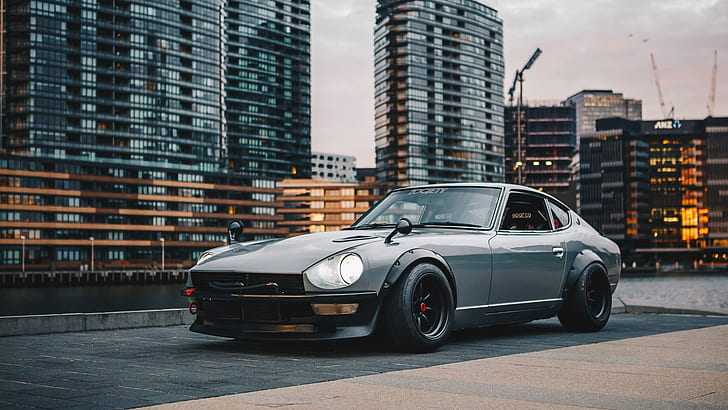
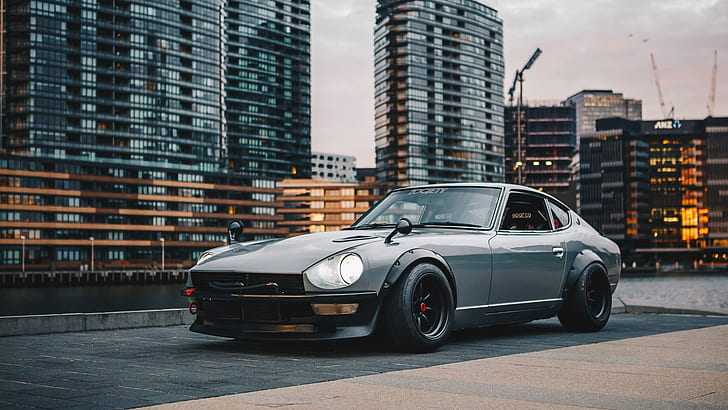

is a vibrant global network of automotive enthusiasts dedicated
to the appreciation, modification, and celebration of Japanese cars. This community spans beyond Japan,
uniting people worldwide who admire the distinctive qualities and engineering excellence of vehicles like
the Nissan Skyline GT-R, Toyota Supra, Honda Civic Type R, Mazda RX-7, and Subaru WRX STI. Celebrated
for their performance, reliability, and unique designs, these cars embody a culture of customization where
enthusiasts enhance performance and aesthetics, adhering to the "kaizen" philosophy of continuous improvement.
The community's social aspect thrives through car meets, shows, and events that foster camaraderie and mutual
appreciation, while its strong online presence on forums, social media, and YouTube channels facilitates global
connectivity, cultural exchange, and the spread of ideas and innovations. The JDM community ultimately represents
a unique blend of passion, creativity, and dedication to automotive excellence, celebrating Japanese engineering
and inspiring future generations of car enthusiasts.


 
